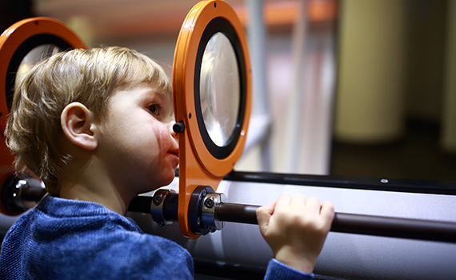
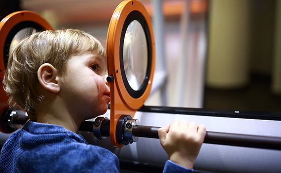

Cosmology
Our fantastic exhibition, ‘The Sky Above Us’, explores the night sky and what we can see and know about the universe around us.
We’ll locate the various constellations and galaxies that can be seen and learn a bit about the early navigators who used the stars to travel by.
Follow the journey of our solar exploration: from early Arab traders, to Galileo’s telescope, to the latest exploration of the planets in our solar system.
Favorite destinations
Earth
Planet Earth, our home, is the third planet from the sun. While scientists continue to hunt for clues of life beyond Earth, our home planet remains the only place in the universe where we've ever identified living organisms.
Mars
Mars, who is also known as the 'Red Planet' due to its beautiful, strong red colour. Mars is the fourth planet from the sun in our solar system. It can get pretty cold on Mars, since it is so far away from the sun. At the equator, temperatures can reach 20°C, but at its poles it can get to as low as -140°C. Brr!
Neptune
Neptune is the eighth planet from the Sun, making it the most distant in the solar system. The reason Neptune is blue is due to the presence of a specific gas named methane. Neptune is about four times wider than Earth. If Earth were a large apple, Neptune would be the size of a basketball.
Explore
 

Events

How was the moon formed?
Sat-Sun 10:00 and 12:00, 2022
Although they are not 100% certain, scientist believe that the moon was formed when a planet named Theia smashed into Earth. Come to the planetarium to see how the explosion may have looked like and learn more about the outer space.

The birth of the earth
Sat-Sun 13:00, 2022
Do you know how old the earth is or how the earth came to life? The fantastic Mr. Rob is going to explain everything when he enters the planetarium with his spectacular new show "The birth of the earth".
Visiting Professor of Aeronautics
March 4-6 11:00, 2022
It is our pleasure to announce that Prof Sheila Widnall from the Massachusetts Institute of Technology will be delivering 3 lectures on the development of aeronautics and where the future lies in this exciting ‘space’.